Exkluzívne : na prenájom trojizbový byt na Belvederi, ulica Nad Plážou
Banská Bystrica
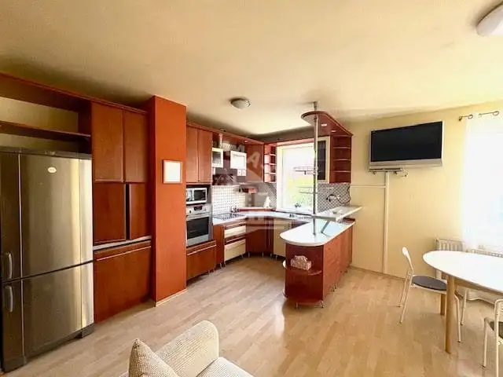
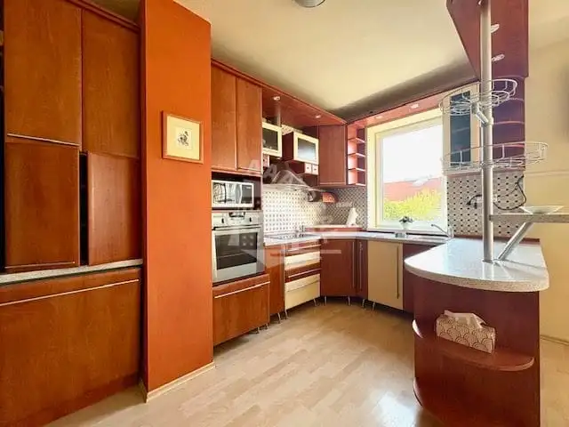
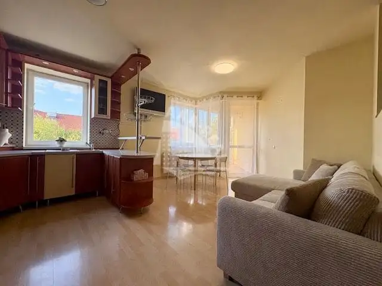
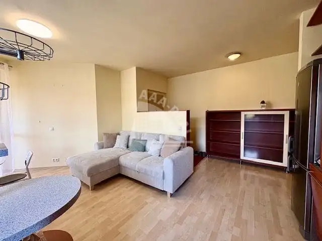
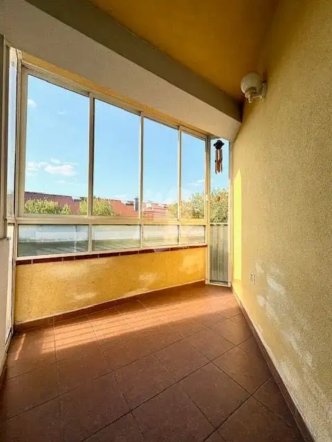
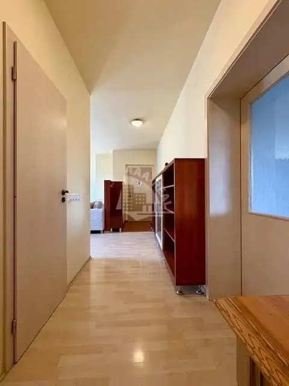
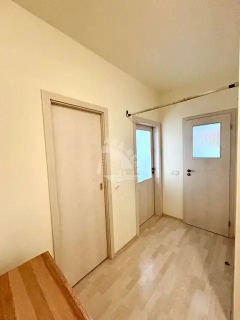
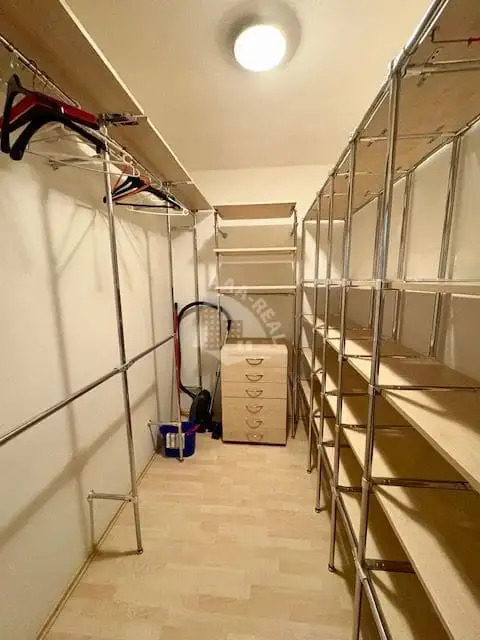
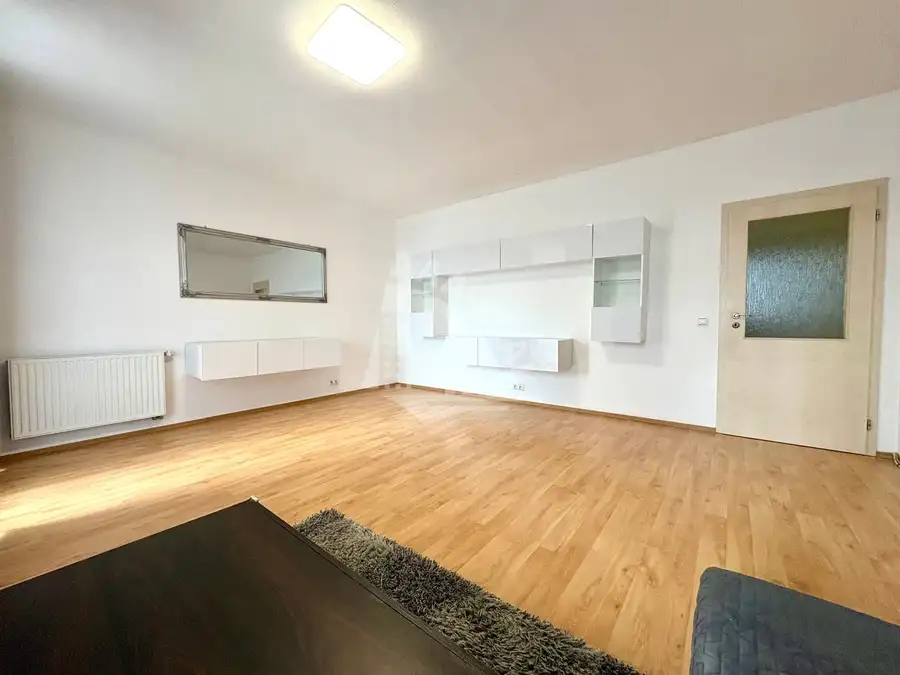
- Dispozícia3-izbový
- Plocha86 m²
- Poschodie3.
- StavNovostavba
- VlastníctvoOsobné
- Energetická triedaB
O nehnuteľnosti
AAA Real, ponúka na prenájom veľký trojizbový byt s výmerou 86 m2 s balkónom a priestrannou slnečnou terasou , nachádzajúci sa na 3.poschodí tehlového bytového domu na ulici Nad Plážou, vo vyhľadávanej mestskej časti BELVEDER v Banskej Bystrici. Výťah k dispozícii.Dispozičné riešenie : vstupná chodba, izba spojená s kuchyňou a vstupom na balkón, obývacia izba so vstupom na terasu, spálňa, kúpeľňa, samostatné WC, veľký samostatný šatník.Byt sa prenajíma zariadený viď foto .O lokalite Belveder a ulici Nad Plážou :Belveder : je moderná rezidenčná štvrť v Banskej Bystrici, ktorá sa etablovala ako jedna z najvyhľadávanejších lokalít pre bývanie v širšom centre mesta. Ide o polyfunkčnú zónu s novostavbami bytových domov, dobrou občianskou vybavenosťou a atraktívnym prostredím blízko centra.Belveder : leží v širšom centre krajského mesta, čo znamená výbornú dostupnosť do centra aj zároveň pokojnejšie rezidenčné prostredie.Belveder : disponuje kompletnou občianskou vybavenosťou pre každodenný život (Obchody: Lidl a ďalšie potraviny, Europa shopping, Doprava: Autobusová zastávka, rýchle pripojenie na diaľnicu, Školstvo: Základná, stredná škola, materská škola v blízkosti, Zdravotníctvo: Nemocnica v dosahu, Služby: Kozmetika, kaderníctvo, kaviarne , Rekreácia: Park, detské ihriská, jazierko, športoviská, plážové kúpaliskoAk hľadáte bývanie, ktoré spája funkčnosť a pohodlie, neváhajte ma kontaktovať a dohodnúť si obhliadku!BYT JE IHNEĎ VOĽNÝ !CENA NÁJMU : 1100,- EUR vrátane energií ( cena nájmu pre 3 osoby ) a VONKAJŠIEHO PARKOVACIEHO MIESTA !PRI PODPISE SA PLATÍ : NÁJOM 1100,- EUR ( prípadne pomerové nájomné ! ) + 1100,- EUR DEPOZIT + SPROSTREDKOVATEĽSKÝ POPLATOKŽIADOSŤ O OBHLIADKY PROSÍM FORMOU MAILU : kasinsky.aaareal@gmail.com alebo kasinsky@aaareal.sk – prípadne KONTAKTNÝM FORMULÁROM !Informácie a obhliadky : Juraj Kašinský – telefónne číslo 0907 812 293Kompletnú ponuku nehnuteľností nájdete na našej stránke www.aaareal.sk
Parametre
- Cena vrátane energií
- Áno
- Druh
- 3 izbový byt
- Dátum zverejnenia
- 21. 09. 2026
- Energetický certifikát budovy
- B
- Podlažie
- 3
- Počet balkónov
- 1
- Stav nehnuteľnosti
- Novostavba
- Telekomunikácie
- Optická sieť
- Terás
- 1
- Typ
- Prenájom
- Typ konštrukcie
- Tehlová
- Vlastníctvo
- Osobné
- Vybavenie
- Balkón, Terasa, Vonkajšie parkovacie miesto, Sklad, Výťah
- Vykurovanie
- Ústredné
- Zariadenie
- Zariadené kompletne
- Úžitková plocha
- 86 m²
Kde to je


Mohlo by Vás zaujímať
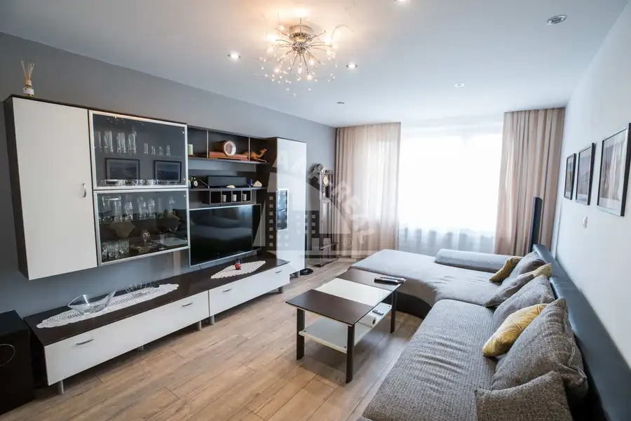
BytNové 238 000 €238.000,- eur !!! exluzívne : na predaj pekný trojizbový byt na Moskovskej ulici Banská Bystrica 3-izbový84.3 m²4. podlažie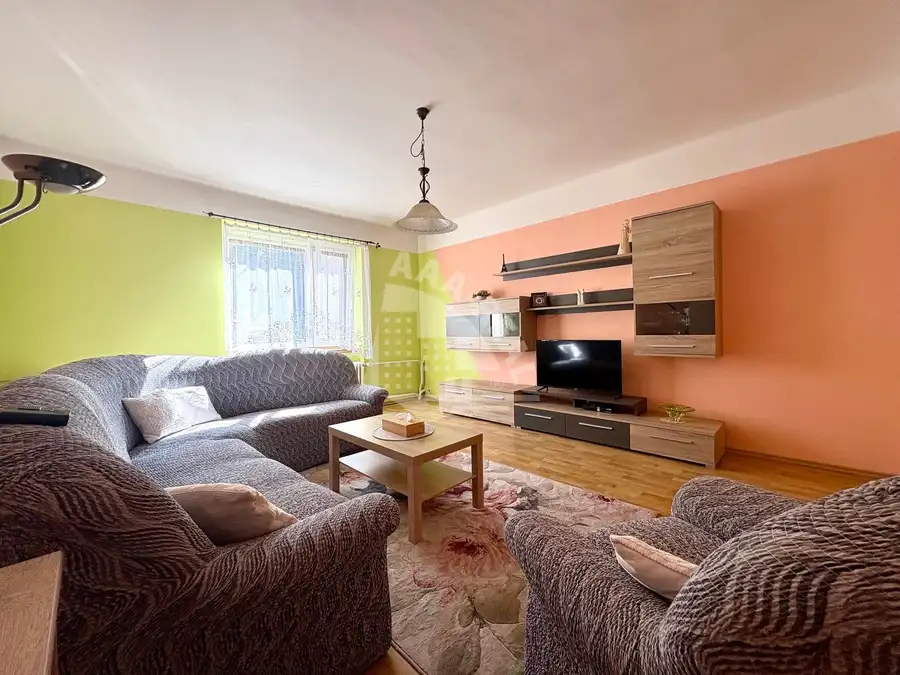
DomNové 229 000 €Exluzívne : na predaj rodinný dom v Brusne Brusno 402 m²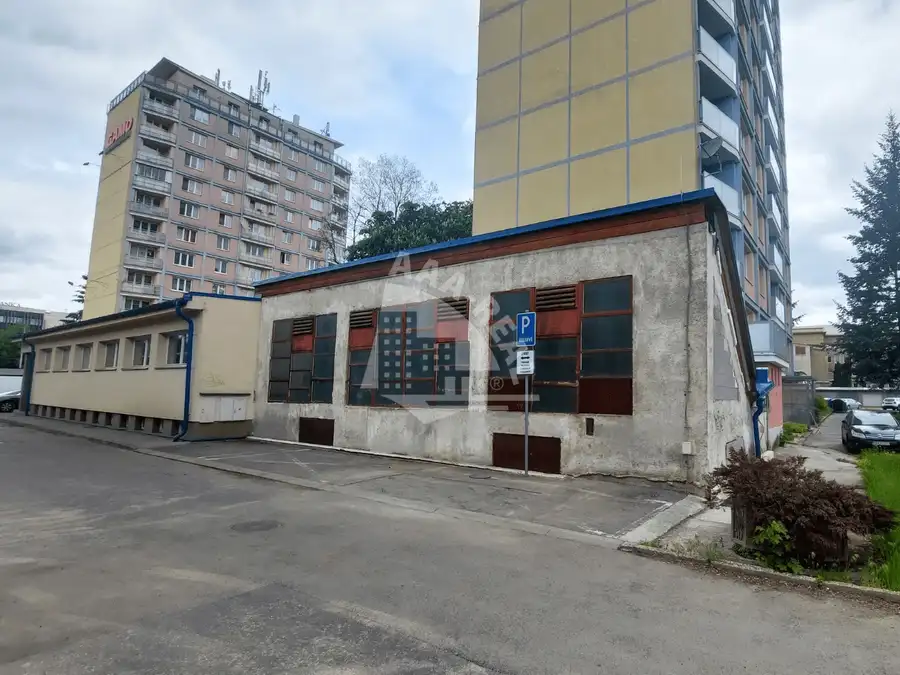
PozemokNové 134 800 €Na predaj pozemok s pôvodnou budovou v centre mesta Banská Bystrica 197 m²